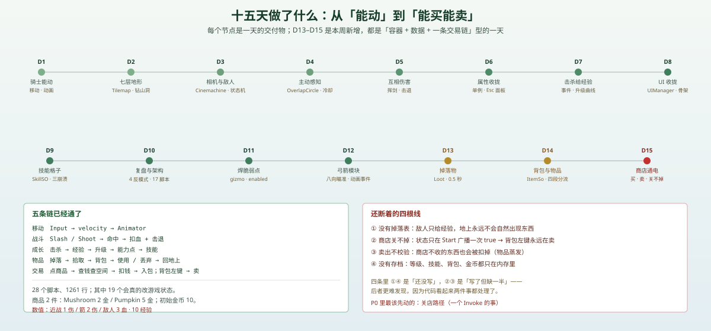

这是「ARPG 学习日志」系列的进度总览，随每篇日志一起更新。截至 Day 15（2026-11-02），工程处于「能走、能打、能升级、能捡、能装、能买卖，但世界里还没有东西可捡、店也关不掉」的状态。
一句话概括：从键盘到伤害、到成长、到物品、到交易的五条链都通了；断的是「世界里为什么会有这些东西」和「那间店为什么关不掉」。

十五天时间线
| 天 | 主题 | 当天的交付物 |
|---|---|---|
| Day 1 · 10-11 | 让骑士动起来 | PlayerMovement：FixedUpdate 写 velocity、动画状态机、localScale 翻转朝向 |
| Day 2 · 10-11 | 七层瓦片与「钻山洞」 | 7 个 Tilemap 的分工、Elevation_Entry / Exit 的碰撞体开关 |
| Day 3 · 10-13 | 相机与敌人初级 AI | Cinemachine（Follow + Confiner + DeadZone）、Enemy_Movement 的 Idle/Chasing 状态机 |
| Day 4 · 10-14 | 敌人主动感知与攻击 | OverlapCircleAll 检测、攻击冷却、Enemy_Combat.Attack() |
| Day 5 · 10-15 | 挥剑与受击反馈 | Player_Combat 武器判定、Enemy_Health、击退 + 眩晕协程 |
| Day 6 · 10-16 | 属性系统与暂停面板 | StatsManger 单例收拢 11 处引用、StatsUI + Esc 面板 + timeScale = 0 |
| Day 7 · 10-18 | 击杀给经验、升级 | OnMonsterDefeated 静态事件、ExpManager 升级公式、ExpSlider + 等级文本 |
| Day 8 · 10-19 | UI 收拢与技能面板骨架 | UIManager、SkillCanvass、1200 面板 + 两棵树 + 24 个空格子 |
| Day 9 · 10-20 | 空格子变成 SkillSlot | SkillSO / SkillSlot / SkillTreeManager / SkillManager，并联调修掉三个崩溃 |
| Day 10 · 10-22 | 十天复盘 | 4 个同源反模式：静态事件忘退订 / public 靠拖 / enabled 当锁 / UI 与数据不同步 |
| Day 10 下 · 10-22 | 架构全景 | 17 个脚本分四层，三条数据流（直接调用 / 事件 / 事件+单例） |
| Day 11 · 10-24 | 焊死战斗脆弱点 | gizmo 空引用、Attack() 的 enabled 真锁、SkillManager.combat 自动取 |
| Day 12 · 10-27 | 弓箭模块 | Player_Bow 八向瞄准、动画事件出箭、Player_ChangeEqiupment 翻 enabled 切动画层 |
| Day 13 · 10-29 | 掉落物与拾取 | LootPrefab 四零件、LootPickup 动画、OnItemLooted 事件、0.5 秒销毁窗口 |
| Day 14 · 11-01 | 背包、物品数据与商店骨架 | ItemSo / UseItem / InventorySlot / InventoryManager；商店只有预制体 |
| Day 15 · 11-02 | 商店通电 | ShopItems 表 + ShopSlot.Initialize + TryBuyItem / SellItem；店铺状态事件 + 背包左键路由 |
提示
还有一篇横向专文：ARPG 技能树系统详解，把 Day 8–9 的技能树从 SO 到「真正改游戏」的链路一次讲透，并更正了 Day 10 里「升级没真给点数」的误记。
现在能玩到什么
| 已经通了 | 还断着 |
|---|---|
| WASD 移动、四态动画、走进山体时沉到山后 | 玩家死亡：PlayerHealth 归零只是 SetActive(false)，没有死亡/重生流程 |
| 相机跟随 + 地图边界约束 | 敌人刷新：全场仍只有一只 Enemy_Torch，打死后不重来 |
| 挥剑命中：扣血、击退、眩晕 | 技能树：24 个节点里 15 个是同一份「Max Health Boost」，8 个落进 default |
| 弓箭：八向瞄准、动画事件出箭、插墙、命中扣血 | 掉落表：敌人只给经验，地上永远不会自然出现物品 |
| 击杀 → 经验 → 升级 → 能力点 → 花点解锁技能 | 商店关不掉：OnShopStateChanged 只在 Start 广播一次 true，于是背包左键被永久征用成「卖」 |
| Esc 属性面板、K 技能树面板（都会暂停） | 卖出不校验：商店不收的东西也会被扣掉一个（物品蒸发） |
| 物品：拾取动画、堆叠、左键使用、右键丢弃、溢出回到地上 | 背包 / 商店面板没有开关：一个 sortingOrder −1 常驻，一个 α 1 常驻 |
买卖：TryBuyItem 查钱查空间、扣钱入包；卖价借用商品价 | 存档：等级、技能、背包、金币、商品状态全部在内存里，重开归零 |
金币：isGold 分流进 gold 计数，不占背包格 | 面板互斥：两个暂停面板共享 Time.timeScale，关任一个时间就恢复 |
七个层次
| 层 | 主要内容 | 状态 |
|---|---|---|
| ① 输入 / 移动 | PlayerMovement：rb.velocity、speed 5、四态动画、isShooting 定身 | ✓ 通 |
| ② 战斗判定 | 近战 OverlapCircleAll + 冷却；远程 Arrow 碰撞 + 层位判断 | ✓ 通（箭伤写死在 prefab） |
| ③ 数值 | StatsManger 单例（玩家）、Enemy_* 各自一套、ItemSo 的效果字段 | ⚠ 三处各有一份数 |
| ④ 成长 | Enemy_Health 事件 → ExpManager → SkillTreeManager → SkillManager | ✓ 通 |
| ⑤ 物品 | Loot 事件 → InventoryManager → InventorySlot / UseItem | ✓ 通（缺掉落源） |
| ⑥ 交易 | ShopItems 表 → ShopSlot → TryBuyItem / SellItem → 背包与金币 | ⚠ 逻辑通、开关缺 |
| ⑦ 表现 / UI | UIManager（Stats / Skill）、ExpCanvas、PlayerUI、InventoryCanvas、ShopCanvas | ⚠ 五张 Canvas、两套开关协议 |
脚本清单
Assets/Scripe/ 下共 28 个脚本、1261 行（含注释与空行）：
| 脚本 | 行数 | 挂载 | 职责 |
|---|---|---|---|
PlayerMovement | 66 | Player | 移动、动画状态、击退接管、射击定身 |
Player_Combat | 58 | Player | 挥剑判定、冷却、gizmo 与 enabled 守卫 |
Player_Bow | 58 | Player | 八向瞄准、动画层权重、由动画事件触发出箭 |
Player_ChangeEqiupment | 17 | Player | 近战 ⇄ 弓箭，翻两个组件的 enabled |
PlayerHealth | 23 | Player | 读写 StatsManger.currentHealth、刷 HP 文本、归零则失活 |
StatsManger | 48 | StatsManager | 单例 + UpdateHealth / UpdateMaxHealth / UpdateSpeed |
StatsUI | 47 | StatsPanel | Esc 开关面板、timeScale 时停、写槽位文字 |
ExpManager | 57 | ExpCanvas | 订阅击杀、累加经验、升级、OnLevelUp 派点 |
Enemy_Movement | 132 | Enemy_Torch | 四态机、检测、追击、翻转、Gizmo |
Enemy_Health | 27 | Enemy_Torch | 血量、归零时广播 expReward 再销毁 |
Enemy_Combat | 35 | Enemy_Torch | 攻击判定、击退与眩晕 |
Enemy_Knockback | 28 | Enemy_Torch | 击退位移与眩晕计时 |
SkillSO | 10 | — | 技能数据资产：名字 / 满级 / 图标 |
SkillSlot | 73 | 24 个按钮 | 前置、等级、解锁、抛两个事件 |
SkillTreeManager | 58 | SkillCanvass | 点数、按钮接线、点满后扫树解锁 |
SkillManager | 31 | SkillCanvass | switch(skillName) 把点翻译成属性 / 组件 |
ToggleSkillTree | 29 | SkillCanvass | K 键开关 + 时停 + blocksRaycasts |
Arrow | 52 | Arrow 预制体 | 飞行、转角度、层位命中、插墙、2 秒自毁 |
ArrowPool | 5 | — | 空类，对象池还没写 |
ItemSo | 19 | — | 物品数据资产（名字/图标/堆叠/属性/时长） |
UseItem | 29 | InventoryCanvas | 按字段写属性，duration 到点回滚 |
InventorySlot | 73 | 3 个格子 | 左键用 / 有店时卖、右键丢、满血不吃回血 |
InventoryManager | 91 | InventoryCanvas | 金币分流、堆叠、空槽、溢出回地上 |
ShopManager | 75 | ShopCanvas | ShopItems 表、填充槽位、TryBuyItem、SellItem、店铺状态事件 |
ShopSlot | 26 | 8 个商品格 | Initialize(itemSo, price)、购买按钮回调 |
Loot | 46 | Loot 预制体 | 图标填充、触发拾取、事件广播、延迟销毁 |
Elevation_Entry | 24 | Non-Collision-Low | 进山：关山体碰撞、开内部围栏、提到 15 层 |
Elevation_Exit | 24 | Exit | 出山：三个操作全部反向 |
提示
Enemy_Movement 一个脚本仍占全项目的十分之一以上——状态机、检测、追击、翻转、Gizmo 全在里面。等加第二种敌人时，这里该先拆一次。
场景结构
| 根物体 | 内容 |
|---|---|
==CAMERAS= | Main Camera + Cinemachine Virtual Camera（Follow / Confiner） |
Confiner | 相机边界多边形 |
Elevation_Base | 7 个 Tilemap（Water / Ground / Rocks / Collision-Low / Non-Collision-Low(+Exit) / Collision-High / Non-Collision-High / MountainBoundary） |
Player | PlayerMovement + Player_Combat + Player_Bow（初始 enabled = false）+ PlayerHealth + Player_ChangeEqiupment + AttackPoint / LaunchPoint |
Enemy_Torch | Enemy_Movement + Enemy_Health + Enemy_Combat + Enemy_Knockback |
StatsManager | StatsManger 单例（挂在 UIManager 下） |
UIManager | StatsCanvas（StatsPanel + 两个槽）· SkillCanvass（SkillPanel + CombatTree/MagicTree ×24 + 技能点） |
ExpCanvas | 经验条 + 等级文本 + ExpManager（仍未收进 UIManager） |
PlayerUI | HP 文本 |
InventoryCanvas | UseItem + InventoryManager + Slots（3 格）+ Gold（sortingOrder −1，无开关） |
ShopCanvas | ShopPanel（TopPanel 3 按钮 / ItemPanel 8 格填 2 / InfoPopup 空壳）+ ShopManager（α 1，无开关） |
EventSystem | 输入模块 |
数值速查
| 玩家 | 值 | 敌人 | 值 |
|---|---|---|---|
damage（近战） | 1 | maxHealth | 3 |
weaponRange | 0.7 | expReward | 10（一只一级） |
cooldown | 2 s | damage | 3 |
speed | 5 | speed | 3 |
maxHealth | 20 | attackRange | 2 |
knockbackForce | 20 | attackCooldown | 2 s |
knockbackTime / stunTime | 0.15 s / 0.2 s | playerDetectRange | 4.14 |
远程（Arrow.prefab） | 值 | 物品 | 值 |
|---|---|---|---|
damage | 2 | stackSize | 3 |
speed | 8 | Pumpkin | speed +5 / 5 s |
knockbackForce | 10 | Steak / Mushroom | 全 0（吃了没反应） |
knockbackTime / stunTime | 0.5 s / 1 s | Gold | isGold = 1 |
lifeSpawn | 2 s | 背包槽数 | 3 |
交易（ShopItems / ShopManager） | 值 |
|---|---|
| 初始金币 | 10 |
| 商品 1 | Mushroom · 2 金 |
| 商品 2 | Pumpkin · 5 金 |
| 商品槽 | 8 个（填 2 个，其余 SetActive(false)） |
| 卖价 | 借用商品价（买 2 卖 2） |
| 成长 | 值 |
|---|---|
| 初始等级 | 0 |
| 本级门槛 | 10，每级 ×1.2（RoundToInt） |
| 单只怪经验 | 10 → 一只即升一级 |
| 技能点 | 场景预置 5，之后每升一级 +1 |
| 技能节点 | 24 个（12 + 12）· 4 份 SkillSO · 2 个根预解锁 |
六条数据流
移动
Input → PlayerMovement.FixedUpdate → rb.velocity = dir × StatsManger.speed → Animator（Idle/Run/Jump/Fall）
近战
Input(Slash) → Player_Combat.Attack() → 动画事件 → DealDamage() → OverlapCircleAll(enemyLayer) → Enemy_Health.ChangeHealth(-1) → Enemy_Knockback.Knockback(...)
远程
Input(Shoot) → Player_Bow 定身 + SetBool → Shoot 状态 → 动画事件 Shoot() → Instantiate(Arrow) → OnCollisionEnter2D → 敌人扣血 / 障碍插墙 → 2 s 销毁
成长
Enemy_Health ≤ 0 → OnMonsterDefeated(10) → ExpManager → OnLevelUp(1) → SkillTreeManager 发点 → SkillSlot.TryUpgradeSkill → OnAbilityPointSpent → 扣点 + SkillManager 改属性
物品
Loot.OnItemLooted(itemSo, n) → InventoryManager.AddItem（金币 / 堆叠 / 空槽 / 溢出）→ InventorySlot.OnPointerClick → UseItem.ApplyItemEffects → StatsManger.Update*
交易
ShopSlot 按钮 → ShopManager.TryBuyItem（钱够 + 有空间）→ gold -= price → InventoryManager.AddItem(itemSo, 1) ｜ 背包左键 → activeShop.SellItem(itemSo) → 在 shopSlots 找同款 → gold += slot.price
问题清单
P0：挡住「可玩」
| # | 问题 | 位置 | 后果 |
|---|---|---|---|
| 1 | 没有掉落表 | 无 | 敌人只给经验，地上永远不会自然出现物品 |
| 2 | 商店关不掉 | ShopManager.Start | OnShopStateChanged 只发过一次 true、没有 false；activeShop 永不为 null → 背包左键永远是「卖」，所有「使用道具」失效 |
| 3 | 卖出不校验 | ShopManager.SellItem | 没有返回值；商店不收的物品也会被扣掉一个 → 物品蒸发 |
| 4 | 背包 / 商店没有开关 | InventoryCanvas / ShopCanvas | 一个常驻 −1 层、一个常驻 α 1 并挡住鼠标 |
| 5 | 静态事件没有 ?.Invoke | Enemy_Health.ChangeHealth | 没订阅者时抛异常 → Destroy 不执行 → 敌人不死 |
| 6 | ExpManager 挂在 Canvas 上 | ExpCanvas | 关 HUD 就退订，直接触发第 5 条 |
| 7 | 升级判定用 if 不是 while | ExpManager.GainExperience | 一次给大额经验会卡在「条满、等级不动」 |
| 8 | 玩家死亡只 SetActive(false) | PlayerHealth | 没有死亡 / 重生 / 重置流程 |
| 9 | 没有存档 | 全部 | 等级、技能、背包、金币重开归零 |
P1：能玩但不对
| # | 问题 | 位置 |
|---|---|---|
| 10 | 空槽分支 slot.quantity = quantity 绕过 stackSize | InventoryManager.AddItem |
| 11 | EffectTimer 挂在 UseItem 上：关面板 = 永久 buff | UseItem |
| 12 | UpdateMaxHealth 不刷属性面板、不给 currentHealth 兜底 | StatsManger |
| 13 | 回血不播 TextUpdate，受击才播（两处写同一个文本） | PlayerHealth / UseItem |
| 14 | ItemSo.currentHealth 是「恢复量」，与 StatsManger.currentHealth 同名不同义 | ItemSo |
| 15 | 拾取 0.5 秒窗口内可重复发放；销毁受 timeScale 影响 | Loot |
| 16 | 两个暂停面板共享 Time.timeScale，关任一个时间就恢复 | StatsUI / ToggleSkillTree |
| 17 | 商店 InfoPopup 可点性为 0：看得见却挡不住鼠标 | ShopCanvas |
| 18 | 金币在 InventoryManager.gold 上，与背包数据分离 | InventoryManager |
| 19 | goldText 在 AddItem / TryBuyItem / SellItem 三处手写刷新 | InventoryManager / ShopManager |
| 20 | 价格存两份：ShopItems.price 与 ShopSlot.price，只有重新 Populate 才同步 | ShopManager / ShopSlot |
| 21 | 卖价＝买价，SellItem 取「第一个匹配」的价格 → 同物两价即套利 | ShopManager.SellItem |
| 22 | HasSpaceForItem 为假时点击零反馈（没变灰、没提示） | ShopManager |
| 23 | ShopPanel 1500×1000 @ (294,−103)：在 1920×1080 里右侧裁 84、底部裁 63 | ShopCanvas |
| 24 | ArrowPool 是空类，箭仍逐发 Instantiate | ArrowPool |
P2：工程卫生
| # | 问题 |
|---|---|
| 25 | 命名：StatsManger（少 a）、isKnockack（少 b）、SkillSTile、两个同名的 CombatPanel、ToggleSkillTree.statsCanvas、Player_ChangeEqiupment、shootColldown |
| 26 | ExpCanvas 参考分辨率 1920 × 108（少个 0） |
| 27 | Layer 混用：只有 StatsCanvas 在 5（UI），SkillCanvass / ShopCanvas / InventoryCanvas 整套在 0 |
| 28 | 文案占位太像真数据：LEVEL: 0、Skill Point: 10、Item Name、99、Strenth: 00 |
| 29 | 技能树 15 个节点重复同一份 Max Health Boost；8 个落进 SkillManager 的 default |
| 30 | 箭伤 / 击退写死在 Arrow.prefab，不走 StatsManger（近战 1、箭 2） |
| 31 | InventoryManager.itemSlots 被 ShopManager 直接 foreach：改字段名就要全局搜 |
下一步
| 天 | 计划 | 验收标准 |
|---|---|---|
| Day 16 | 收尾交易：补一次 Invoke(this, false) + ToggleShop；SellItem 返回 bool；买卖价分离；AddGold 唯一写入口 | 关店后左键能吃药；卖不掉的东西不再蒸发 |
| Day 17 | LootTable（怪物 → 物品 / 概率 / 数量）+ 敌人死亡时按表生成 Loot | 打死怪会掉东西，可能掉 0 个；金币有了稳定来源 |
| Day 18 | 面板互斥：ToggleInventory / ToggleShop + 引用计数的暂停栈 | 三个面板互斥，关掉最后一个才恢复时间 |
| Day 19 | 存档：level / currentExp / 已学技能 / 背包 / gold 序列化 | 退出再进，一切都还在 |
如果只能先修三件事：给 ShopManager 补一次 Invoke(this, false)（背包左键立刻恢复成「使用」）、让 SellItem 返回 bool 再决定要不要 quantity--（物品不再蒸发）、给 Enemy_Health 补 ?.Invoke 并把 ExpManager 挪出 Canvas（一个字符换一条命）。
怎么跟进
十五篇日志各自只讲一天的事，这里是横向对照：